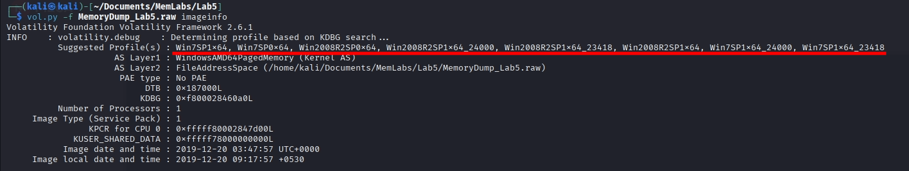
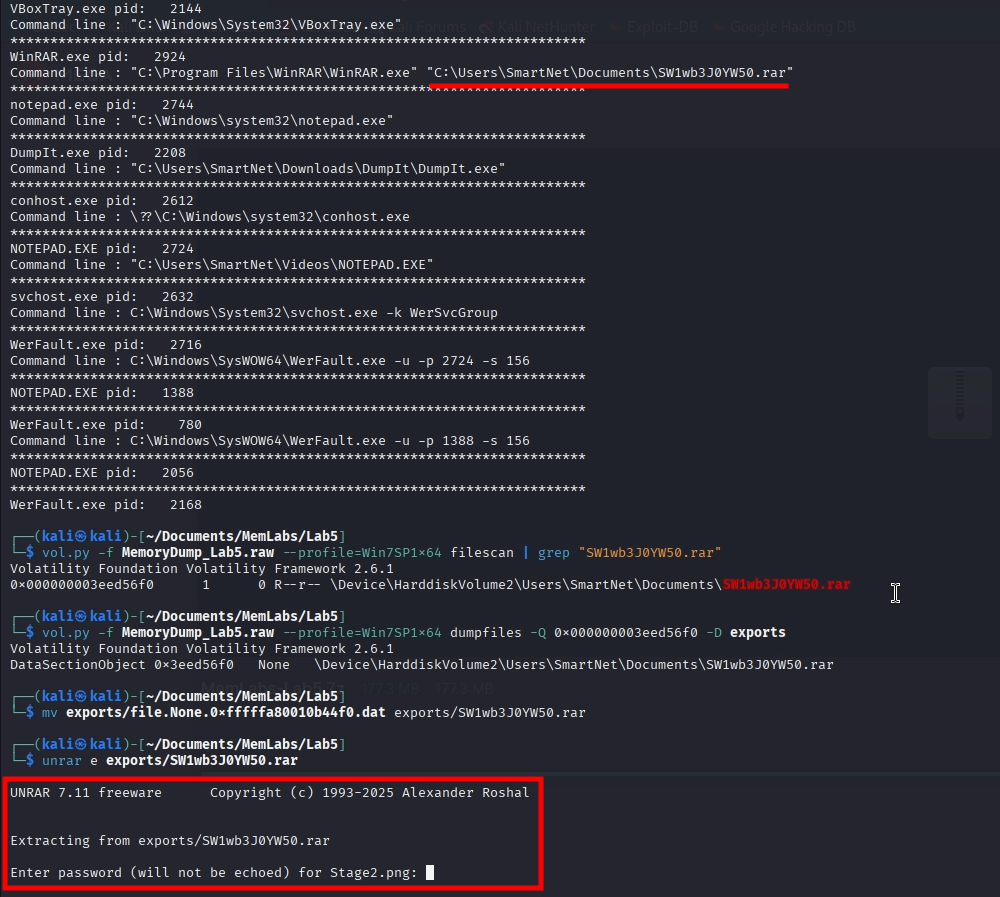
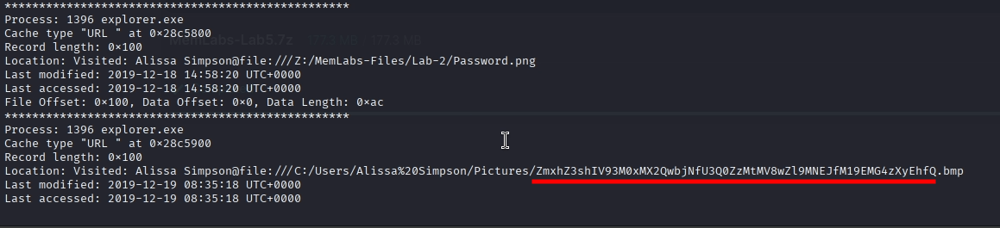
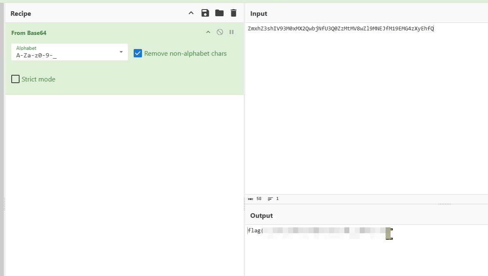
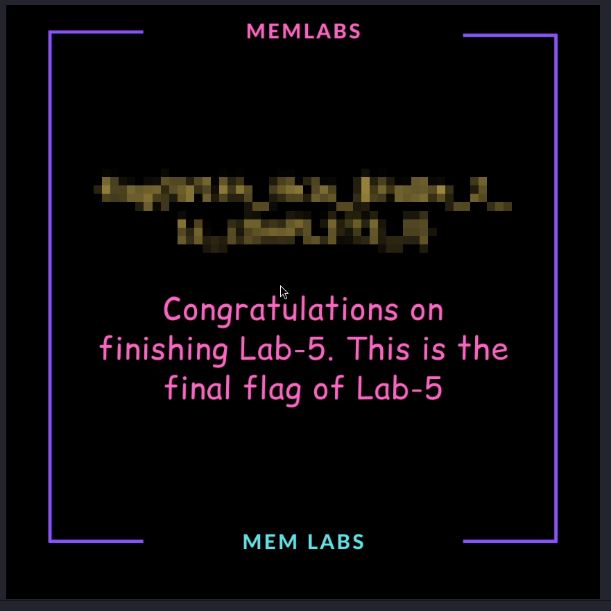
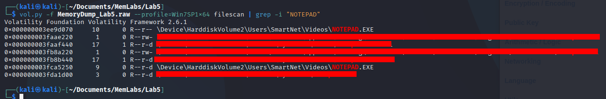
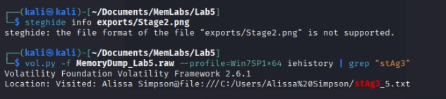

En este write-up, me adentro en los retos de MemLabs, una serie de laboratorios diseñados para poner a prueba nuestras habilidades en el análisis de volcados de memoria. Equipado con Volatility, una de las herramientas más potentes para diseccionar sistemas vivos o caídos, iré desenterrando credenciales, procesos sospechosos, conexiones de red y cualquier pista que hayan dejado atrás.
Penúltimo reto de los laboratorios. En esta ocasión tenemos el primer desafío difícil, MemLabs Lab 5 - Black Tuesday
Recibimos este volcado de memoria de parte de un cliente recientemente. Alguien accedió a su sistema cuando él no estaba, y descubrió que se habían abierto unos archivos bastante extraños. Encuentra esos archivos, podrían ser importantes. Cito sus palabras textuales:.
Los nombres no eran legibles. Estaban compuestos por letras y números, pero no pude entender exactamente qué eran.
Además, notó que su aplicación favorita la que usaba todo el tiempo se cerraba sola cada vez que la ejecutaba. ¿Fue un virus?
Además, este reto consta de 3 flag.
Supuestamente, este reto se compone de 3 flags, sin embargo, por más que busqué no encontré nada, ni siquiera en otros Write-Up
Para sacar la memoria debemos usar el siguiente comando:
vol.py -f MemoryDump_Lab5.raw imageinfo

Como ya he dicho varias veces, podemos usar cualquira que nos salga.
Lo primero que pensé fue hacer lo mismo que el reto anterior, empezar buscando los usuarios y luego en sus respectivos directorios, lo único que encontré fue un archivo comprimido con un nombre raro:
Lo encontré usando cmdline y luego filtrando.
Como vemos en la imagen, esto se trata de la segunda flag, necesitamos la primera para conseguir la segunda.
Usando iehistory, encontramos el siguiente archivo:
El cuál, al descifrarlo en base64, nos da la primera flag y, además, podemos usarlo como contraseña del archivo anterior, consiguiendo así la segunda flag.
 Como dije antes, fuí incapaz de encontrar la tercera flag, lo único que encontré fue un ejecutable y un archivo de texto que no se puede extraer:
 Busqué información del reto en varios foros y no pude encontrar la última flag; desconozco si se trata de una característica intencionada por el creador o de un evento exclusivo para ciertos participantes.
No mentiré, este reto me ha dejado un muy mal sabor de boca. Sigo creyendo que hay algo que se me escapa, pero no logro comprenderlo. De todas formas, hemos terminado el quinto desafío; solo nos queda uno para terminar.
Ir al laboratorio anterior